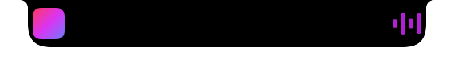

Nunsseop
Your MacBook notch, made useful. What's playing, a file shelf, your calendar and system HUDs, all hanging from the top of the screen.
MacBook 노치를 쓸모 있는 공간으로. 지금 재생 중인 음악, 파일 선반, 캘린더, 시스템 HUD를 화면 맨 위에서 바로.

What it does주요 기능
Hover over the notch to open it. Right-click for Settings.노치에 마우스를 올리면 열리고, 우클릭하면 설정이 나옵니다.
Now playing지금 재생 중
Artwork, progress and controls for anything that plays: Music, Spotify, YouTube Music, and browsers such as Safari, Chrome, Arc, Dia and Aside.
Music, Spotify, YouTube Music, 그리고 Safari·Chrome·Arc·Dia·Aside 같은 브라우저 재생까지 앨범아트, 진행바, 재생 컨트롤로 보여 줍니다.
Sneak peek미리보기
When the track changes, its title slides out under the notch for a moment, or stays there if you like.
곡이 바뀌면 노치 아래에 제목이 잠깐 나옵니다. 원하면 계속 보이게 할 수도 있습니다.
File shelf파일 선반
Drop files on the notch to keep them close, drag them out when you need them. It survives restarts.
파일을 노치에 끌어다 두고 필요할 때 다시 끌어내세요. 앱을 다시 켜도 그대로 남아 있습니다.
Calendar캘린더
A week strip and the day's events, right next to your music.
음악 옆에 이번 주 날짜와 그날 일정을 보여 줍니다.
System HUDs시스템 HUD
Volume, brightness, charging and headphone battery appear in the notch. It can replace the system volume and brightness HUD.
볼륨, 밝기, 충전, 헤드폰 배터리를 노치에 표시합니다. 기본 볼륨·밝기 HUD를 대체할 수도 있습니다.
Make it yours내 맞게 조절
Size, hover delay, sneak peek and every HUD are adjustable. English and Korean, following your Mac's language.
크기, 열림 지연, 미리보기, 각 HUD를 조절할 수 있습니다. Mac 언어에 따라 영어 또는 한국어로 표시됩니다.
In the notch노치에서는 이렇게
Screens without a notch get a pill at the top centre.노치가 없는 화면에서는 상단 중앙에 작은 막대로 나타납니다.

Music playing, collapsed
재생 중일 때 접힌 노치

Headphones connected
헤드폰 연결
Brightness
밝기
Build and run빌드하고 실행하기
Requires macOS 14 or later and the Xcode command line tools.macOS 14 이상과 Xcode 명령줄 도구가 필요합니다.
git clone https://github.com/namekun/Nunsseop.git
cd Nunsseop
./scripts/bundle.sh release
open build/Nunsseop.appBuilds are ad-hoc signed, so macOS may ask for permissions again after you rebuild. Move the app to /Applications before turning on launch at login.
임시 서명으로 빌드되기 때문에, 다시 빌드하면 macOS가 권한을 다시 물을 수 있습니다. 로그인 시 실행을 켜기 전에 앱을 /Applications로 옮겨 주세요.
Permissions필요한 권한
| Feature | 기능 | Permission | 권한 |
|---|---|---|---|
| Calendar캘린더 | Calendars캘린더 | ||
| Replacing the volume/brightness HUD볼륨·밝기 HUD 대체 | Accessibility손쉬운 사용 | ||
| Fallback for Music, Spotify and browsersMusic·Spotify·브라우저 대체 경로 | Automation자동화 | ||
| Launch at login로그인 시 실행 | Login Items로그인 항목 |
How now playing works재생 정보를 읽는 방식
Since macOS 15.4, the private MediaRemote framework only answers apps signed by Apple. Nunsseop runs a small helper inside the system's /usr/bin/perl to read what's playing and send play, pause, next and previous. Because this relies on private API, a future macOS update may break it; Nunsseop then falls back to AppleScript for Music and Spotify and to reading media tabs in browsers.
macOS 15.4부터 비공개 MediaRemote 프레임워크는 Apple이 서명한 앱에만 응답합니다. Nunsseop은 시스템의 /usr/bin/perl 안에서 작은 헬퍼를 실행해 재생 정보를 읽고 재생·일시정지·다음·이전 명령을 보냅니다. 비공개 API에 기대는 방식이라 이후 macOS 업데이트에서 막힐 수 있으며, 그때는 Music·Spotify AppleScript와 브라우저 탭 읽기로 자동 전환됩니다.